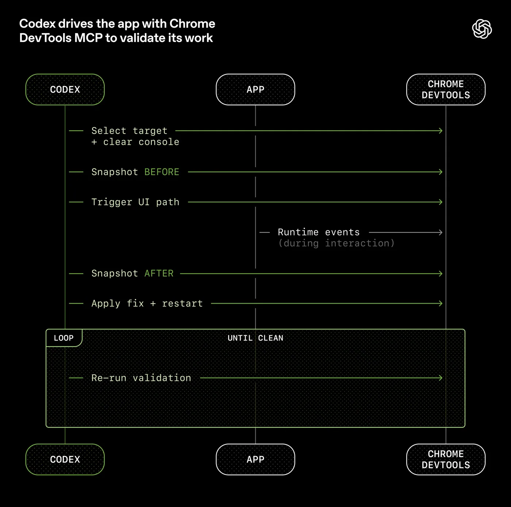

工程技术：在智能体优先的世界中利用 Codex
2026年2月11日
在过去五个月里，我们的团队一直在进行一项实验：构建并交付一款软件产品的内部 beta 版， 其中没有一行代码是人工编写的。
该产品有内部日常活跃用户和外部 Alpha 测试者。它经历了交付、部署、故障和修复的整个过程。与众不同的是，每一行代码 — 从应用逻辑、测试、CI 配置、文档、可观察性到内部工具 — 全都是由 Codex 编写的。据估计，我们只用了手工编写代码所需的大约 1/10 的时间就完成了这项工作。
人类掌舵。智能体执行。
我们有意选择这一限制，以便构建必要的内容，从而将工程速度提升数个数量级。我们用了几周的时间来交付最终达到一百万行代码的项目。为此，我们需要了解，当软件工程团队的主要工作不再是编写代码，而是设计环境、明确意图和构建反馈回路，从而使 Codex 智能体能够可靠地工作时，会发生哪些变化。
这个帖子要说的是，在我们与智能体团队一起从零开始打造一款全新产品的过程中，所能学到的经验教训 — 哪些地方出了问题，哪些问题相互叠加，以及如何最大化利用我们唯一真正稀缺的资源：人类的时间和注意力。
我们从一个空的 Git 代码仓库开始
首次提交到一个空的代码仓库是在 2025 年 8 月下旬。
初始架构 — 包括代码仓库结构、CI 配置、格式化规则、包管理器设置和应用框架 — 是在一小套现有模板的指导下，由 Codex CLI 使用 GPT‑5 生成的。就连指导智能体如何在代码仓库中工作的初始 AGENTS.md 文件本身也是由 Codex 编写的。
该系统没有预存任何人工编写的代码。从一开始，代码仓库就由智能体塑造。
五个月后，该代码仓库已经拥有约一百万行代码，从应用逻辑、基础设施、工具、文档到内部开发者工具应有尽有。在那段时间内，大约有 1,500 个 Pull Request 被打开与合并，而推动 Codex 的仅仅是一个由三名工程师组成的小团队。这相当于平均每位工程师每天处理 3.5 个 PRs 的吞吐量，而且令人惊讶的是，随着团队规模扩大到现在的七名工程师，吞吐量甚至还 增加 了。重要的是，这并非为了输出而输出：该产品已在数百名内测用户那里投入使用，其中包括每天都在使用的内测高级用户。
在整个开发过程中，人类从未直接直接贡献过任何代码。这成为团队的核心理念： 不手动编写代码。
重新定义工程师的角色
由于缺乏人工编码的实践， 工程师工作的重点转向了系统、架构和杠杆作用。
早期进展比我们所预期的要慢，而这并不是因为 Codex 不具备相应的能力，而是因为环境的规范不够明确。该智能体缺乏实现高级目标所需的工具、抽象层和内部结构，因而无法取得进展。我们工程团队的主要任务成了协助智能体完成有用的工作。
在实践中，这意味着采用深度优先的工作方式：将更大的目标拆解为更小的构建模块（设计、代码、评审、测试等），提示智能体去构建这些模块，并使用它们去解锁更复杂的任务。当事情进行不顺利时，解决方案基本上再也不会是“再努力一点”。因为取得进展的唯一方式是让 Codex 来完成工作，而人类工程师则总是介入这项任务并追问：“究竟还需要什么样的能力，我们又该如何让这个能力对智能体来说既清晰可读又可强制执行？”
人类几乎完全通过提示与系统交互：工程师描述任务，运行智能体，并允许其打开一个 Pull Request。为了推动 PR 的完成，我们会指示 Codex 在本地审核其自身的更改，在本地和云端请求额外的特定智能体审查，对任何人工或智能体给出的反馈做出响应，并循环往复，直到所有智能体审核人员都满意为止（这实际上是一个 Ralph Wiggum 循环 ）。Codex 直接使用我们的标准开发工具（gh、本地脚本和嵌入代码仓库的技能）来收集情境，而无需人工将内容复制粘贴到 CLI 中。
人类可以审核 Pull Request（合并请求），但并非必须这样做。随着时间的推移，我们已将几乎所有的审核工作调整为用智能体对智能体的方式来处理。
提高应用程序的可读性
随着代码吞吐量的增加，我们的瓶颈变成了人工 QA 能力。由于人类的时间和注意力是固定的限制因素，我们一直在努力通过令应用程序的 UI、日志和应用指标等内容对 Codex 直接可读，从而为智能体增加更多功能。
例如，我们令应用程序可以根据 git worktree 启动，因此 Codex 可以为每次更改启动并驱动一个实例。我们还将 Chrome DevTools 协议接入智能体运行时，并创建了用于处理 DOM 快照、屏幕截图和导航的技能。这使 Codex 能够复现错误、验证修复，并直接推理 UI 的行为。

题为“Codex 使用 Chrome DevTools MCP 驱动应用程序以验证其工作”的图表。Codex 会选择一个目标，对触发用户界面路径前后的状态进行快照，通过 Chrome DevTools 观察运行时事件，应用修复、重启和循环重新运行验证，直到应用程序恢复正常。
我们对可观测性工具也做了同样的处理。日志、指标和追踪记录会通过一个本地可观测性堆栈展示给 Codex，对任何给定的工作树来说，该堆栈都是临时的。Codex 在该应用程序的一个完全独立的版本上运行，一旦任务完成，该版本的所有内容，包括日志和指标，都会被删除。智能体可以使用 LogQL 查询日志，使用 PromQL 查询指标。有了这些情境，像“确保服务启动在 800ms 内完成”或“这四个关键用户旅程中的任何跨度都不得超过两秒”这样的提示就变得可行了。
我们经常看到单次 Codex 运行在单个任务上持续工作超过六个小时（通常是在人类睡眠时间）。
我们将代码仓库设为记录系统
情境管理是使智能体在大型和复杂任务中有效发挥作用的最大挑战之一。我们学到的最早经验教训之一很简单： 要给 Codex 的是一张地图，而不是一本 1,000 页的说明书。
我们尝试了“一个大型的 AGENTS.md ”方法。可想而知，这是一次失败的尝试：
- 情境是一种稀缺资源。 一个巨大的指令文件会挤掉任务、代码和相关文档 — 因此智能体要么会错过关键约束条件，要么开始针对错误的约束条件进行优化。
- 过多的指导反而变得 无效 。 当一切都 "重要"时，一切都不重要了。智能体最终会在本地进行模式匹配，而不是有意识地进行导航。
- 它会立即腐烂。 一本庞杂的手册会变成陈旧规则的坟场。智能体无法判断哪些信息仍然有效，一旦人类停止维护它，此文件就会悄然成为一个颇具吸引力的麻烦源头。
- 这很难核实。 单个 blob 不适合进行机械检查（覆盖率、新鲜度、所有权、交叉链接），因此漂移是不可避免的。
因此，我们不再将 AGENTS.md 视为百科全书，而是将其视为 内容目录。
代码仓库的知识库位于一个结构化了的 docs/ 目录中，此目录被当作记录系统来使用。一份简短的 AGENTS.md （大约 100 行）被注入到情境中，主要用作地图，并指向其他地方更深层次的真实信息来源。
纯文本
AGENTS.md
ARCHITECTURE.md
docs/
├── design-docs/
│ ├── index.md
│ ├── core-beliefs.md
│ └── ...
├── exec-plans/
│ ├── active/
│ ├── completed/
│ └── tech-debt-tracker.md
├── generated/
│ └── db-schema.md
├── product-specs/
│ ├── index.md
│ ├── new-user-onboarding.md
│ └── ...
├── references/
│ ├── design-system-reference-llms.txt
│ ├── nixpacks-llms.txt
│ ├── uv-llms.txt
│ └── ...
├── DESIGN.md
├── FRONTEND.md
├── PLANS.md
├── PRODUCT_SENSE.md
├── QUALITY_SCORE.md
├── RELIABILITY.md
└── SECURITY.md
代码仓库内知识存储布局。
设计文档已被编目和索引，其中包括验证状态和一套核心理念，定义了智能体优先的操作原则。 架构文档 提供域和包分层的顶层地图。一份高质量的文档会对每个产品领域和架构层进行评分，并随着时间的推移追踪差距。
计划被视为一流的工件。临时轻量计划用于小幅变更，而复杂工作则记录在 执行计划 中，并附带进度和决策日志，这些日志会被提交到代码仓库。活跃计划、已完成计划和已知的技术债务都已进行版本控制并集中存放，使智能体能够在不依赖外部情境的情况下运行。
这实现了 渐进式披露：智能体从一个小而稳定的切入点开始，并被指导下一步该去哪里查看，而不是一开始就被淹没。
我们严格执行这一点。专职的 linter 和 CI 作业会验证知识库的更新状况、是否已交叉链接且结构正确。一个定期运行的“doc-gardening”智能体会扫描那些不再反映真实代码行为的过时或废弃文档，并发起修复用的 Pull Request。
目标是智能体的可读性
随着代码库的发展，Codex 的设计决策框架也需要随之演变。
由于该代码仓库完全由智能体生成，因此我们首先针对 Codex 的 可读性 进行了优化。就像团队会努力提升代码对新入职工程师的可导航性一样，我们的人类工程师的目标也是让智能体能够 直接从代码仓库 推理出完整的业务领域。
从智能体的角度来看，它在运行时无法在情境中访问的任何内容都是不存在的。存储在 Google Docs、聊天记录或人们头脑中的知识都无法被系统访问。代码仓库本地的、已版本化的工件（例如，代码、Markdown、模式、可执行计划）就是它所能看到的全部。
我们了解到，随着时间的推移，我们需要将越来越多的情境推送到仓库中。那次让团队在架构模式上达成一致的 Slack 讨论？如果智能体无法发现它，那么它就会像迟了三个月入职的新员工一样，对其一无所知。
为 Codex 提供更多情境意味着要组织和展示正确的信息，好令智能体能够基于这些信息进行推理，而不是用临时指令使其不堪重负。就像你会在产品原则、工程规范和团队文化（包括表情符号偏好）方面为新队友提供引导一样，将这些信息提供给智能体会带来更一致的输出。
这一框架明确了许多取舍。我们倾向于选择那些可以完全内化于在仓库中进行推理的依赖项和抽象。对智能体来说，通常被称为“枯燥”的技术，由于其可组合性、API 稳定性和在训练集里的表现，往往更容易建立模型。在某些情况下，让智能体重新实现部分功能子集比绕过公共库中不透明的上游行为更便宜。例如，我们没有引入通用的 p-limit 风格包，而是投入使用了我们自己的带并发的 map 辅助函数：它与我们的 OpenTelemetry 仪表紧密集成，具备 100% 的测试覆盖率，并且其行为完全符合我们的运行时预期。
将系统的更多部分转化为智能体可以检查、验证并直接修改的形式，可以直接提高杠杆效应 — 这不仅适用于 Codex，也适用于其他智能体（例如 Aardvark) 也在参与代码库的开发。
规范架构与品味
仅靠文档本身，是没法保持完全由智能体生成的代码库的连贯性的。 通过强制执行不变量，而非对实施过程进行微观管理，我们令智能体能够快速交付，而且不会削弱基础。 例如，我们要求 Codex 在边界处解析数据形状 ，但不规定具体实现方式（模型似乎偏好 Zod，但我们没有指定特定库）。
智能体在具有 严格边界和可预测结构 的环境中最为高效，因此我们围绕一个严格的架构模型构建了该应用。每个业务域都划分为一组固定的层，依赖方向经过严格验证，并且仅允许有限的一组边。这些约束是通过自定义的 linter（当然是由 Codex 生成的！）和结构测试机械地强制执行的。
下图展示了规则：在每个业务领域内（例如应用设置），代码只能“向前”依赖于一组固定的层（Types → Config → Repo → Service → Runtime → UI）。横切关注点（认证、连接器、遥测、功能标志）通过一个单一的显式接口进入：Providers。其他任何内容都不被允许，并将通过自动化方式强制执行。
这种架构通常要等到你拥有数百名工程师时才会推迟。对于编码智能体来说，这是一个早期的先决条件：有了约束，速度才不会下降，架构才不会漂移。
在实践中，我们通过自定义的代码检查器和结构测试来强制执行这些规则，并辅以一小组“品味不变式”。例如，我们通过自定义 lint 静态地强制执行结构化日志记录、模式和类型的命名约定、文件大小限制，以及特定平台的可靠性要求。由于这些 lint 是自定义的，我们编写错误信息时会在智能体情境中注入修复指令。
在以人为本的工作流程中，这些规则可能会让人感到迂腐或束缚。有了智能体，它们就成了倍增器：一旦编码，它们就能立即应用于所有地方。
同时，我们还明确指出了哪些地方需要限制，哪些地方不需要限制。这类似于领导一个大型工程平台组织：在中央层面强制执行边界，在本地层面允许自主权。你非常重视界限、正确性和可重复性。在这些边界内，你允许团队或智能体在解决方案的表达方式上拥有很大的自由。
生成的代码不总是符合人类的风格偏好，这也没关系。只要输出是正确的、可维护的，并且对未来的智能体运行而言清晰易读，就可以算作达标。
人类的品味会不断反馈到系统中。审查评论、重构的 Pull Request 和面向用户的 Bug 会被记录为文档更新，或直接编码到工具中。当文档不够完善时，我们会将规则转化为代码
吞吐量改变了合并的理念
随着 Codex 的吞吐量增加，许多传统的工程规范变得不再有效。
该代码仓库在运行过程中尽量减少阻塞合并门。Pull Request 的生命周期很短。测试偶发失败通常通过后续重跑来解决，而不是无限期地阻碍进展。在一个智能体吞吐量远超人类注意力的系统中，纠错成本低，而等待成本高。
在低吞吐量环境中，这样做是不负责任的。而在这里，这通常是正确的选择。
“智能体生成”实际上意味着什么
当我们说代码库是由 Codex 智能体生成的，我们指的是整个代码库。
智能体的产出包括：
- 产品代码与测试
- CI 配置和发布工具
- 内部开发者工具
- 文档和设计历史
- 评估框架
- 审阅评论和回复
- 管理代码仓库本身的脚本
- 生产仪表板定义文件
人类始终参与其中，但工作的抽象层次与过去不同。我们优先处理工作，将用户反馈转化为验收标准，并对结果进行验证。当智能体遇到困难时，我们将其视为一个信号：识别缺失的内容 — 工具、指导与约束、文档 — 并将其反馈到代码仓库中，始终由 Codex 自己编写修复。
智能体可以直接使用我们的标准开发工具。他们会拉取审查反馈、在行内回复、推送更新，并且经常压缩并合并他们自己的 Pull Request（合并请求）。
不断提高的自主水平
随着越来越多的开发环节被直接编码到系统中 — 包括测试、验证、审查、反馈处理和恢复 — 该代码仓库最近跨过了一个重要门槛，使 Codex 能够端到端地驱动一个新功能。
给定一个提示，智能体现在可以：
- 验证代码库的当前状态
- 重现已报告的漏洞
- 录制一个演示故障的视频
- 实施修复措施
- 通过运行应用程序来验证修复
- 录制第二个视频，演示解决方案
- 打开 Pull Request
- 回应智能体和人类反馈
- 检测并修复构建故障
- 仅在需要判断时才交由人工处理
- 合并更改
此行为在很大程度上取决于此代码仓库的具体结构和工具，不应在没有类似投入的情况下假定它可以泛化 — 至少目前还不行。
熵与垃圾收集
完全自主的智能体也引入了新的问题。 Codex 会复现代码仓库中已存在的模式 — 甚至包括那些不均衡或不够理想的模式。随着时间的推移，这不可避免地导致漂移。
最初，人类是手动处理这个问题的。我们的团队过去每周五（占一周的20%）都要花时间清理“AI 残渣”。不出所料，那并不具备可扩展性。
相反，我们开始将我们称为“黄金原则”的内容直接编码到代码仓库中，并建立了一个循环清理流程。这些原则是带有主观意见的机械规则，旨在保持代码库的可读性和一致性，以便将来运行智能体。例如：(1) 我们更倾向于使用共享的实用程序包，而不是手工编写的辅助工具，以便将不变式集中管理；(2) 我们不会使用“YOLO 式”探测数据 — 我们会验证边界，或依赖类型化的 SDK，这样智能体就不会意外地基于猜测的结构进行构建。我们会定期运行一组后台 Codex 任务，扫描偏差、更新质量等级，并发起有针对性的重构 Pull Request。其中大多数都可以在一分钟内完成审查并自动合并。
其功能类似于垃圾回收。技术债务就像一笔高息贷款：不断地以小额贷款的方式偿还债务，总比让债务不断累积，再痛苦地一次解决要好得多。人类的品味一旦被捕捉，就会持续应用于每一行代码。这也使我们能够每天发现并解决不良模式，而不是让它们在代码库中传播数天或数周。
我们仍在学习的内容
到目前为止，这一策略在 OpenAI 的内部发布和采纳过程中表现良好。为真实用户打造真实产品，帮助我们将投资锚定在现实中，并引导我们实现长期的可维护性。
我们尚不清楚的是，在一个完全由智能体生成的系统中，架构连贯性会如何随着时间的推移而演变。我们仍在学习人类的判断力在哪些方面能发挥最大作用，以及如何对这种判断力进行编码，使其发挥更大作用。我们也不知道，随着时间的推移，模型的功能不断增强，这一系统将如何演变。
显而易见的是：构建软件仍然需要纪律，但纪律更多地体现在支撑结构上，而不是代码上。保持代码库一致性的工具、抽象和反馈回路变得越发重要。
我们当前最棘手的挑战集中在设计环境、反馈回路和控制系统方面，帮助智能体实现我们的目标：大规模构建和维护复杂、可靠的软件。
随着像 Codex 这样的智能体在软件生命周期中占据越来越大的比重，这些问题将变得更加重要。我们希望通过分享一些早期的经验教训，帮助你理清投入精力的方向，以便 你可以直接开始构建。
作者
Ryan Lopopolo
致谢
特别感谢 Victor Zhu 和 Zach Brock 为这篇文章做出的贡献，以及开发这款新产品的整个团队。
继续阅读用 Codex 构建可自我改进的税务智能体
[
工程
](https://openai.com/zh-Hans-CN/index/building-self-improving-tax-agents-with-codex/)为 Windows 上的 Codex 构建安全高效的沙箱环境
[
工程
](https://openai.com/zh-Hans-CN/index/building-codex-windows-sandbox/)